Walkthrough of implementing a
cohort study using OHDSI tools
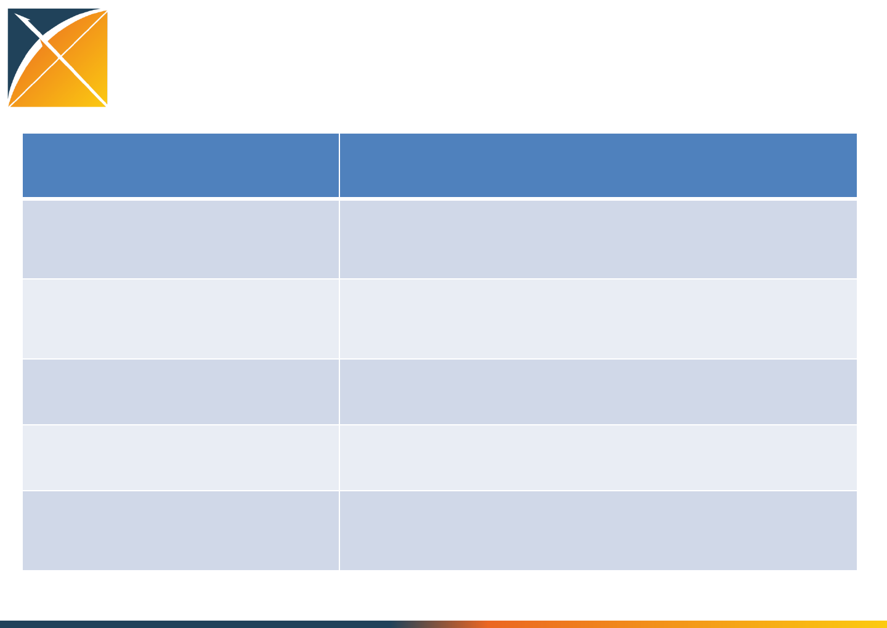
What is the design used by Graham et al?
Input parameter Design choice
Target cohort (T) dabigatran new users with prior atrial
fibrillation
Comparator cohort (C) warfarin new users with prior atrial
fibrillation
Outcome cohort (O) Ischemic stroke
Time-at-risk 1 day after cohort start cohort end
Model specification 1:1 propensity score-matched univariable
conditional Cox proportional hazards
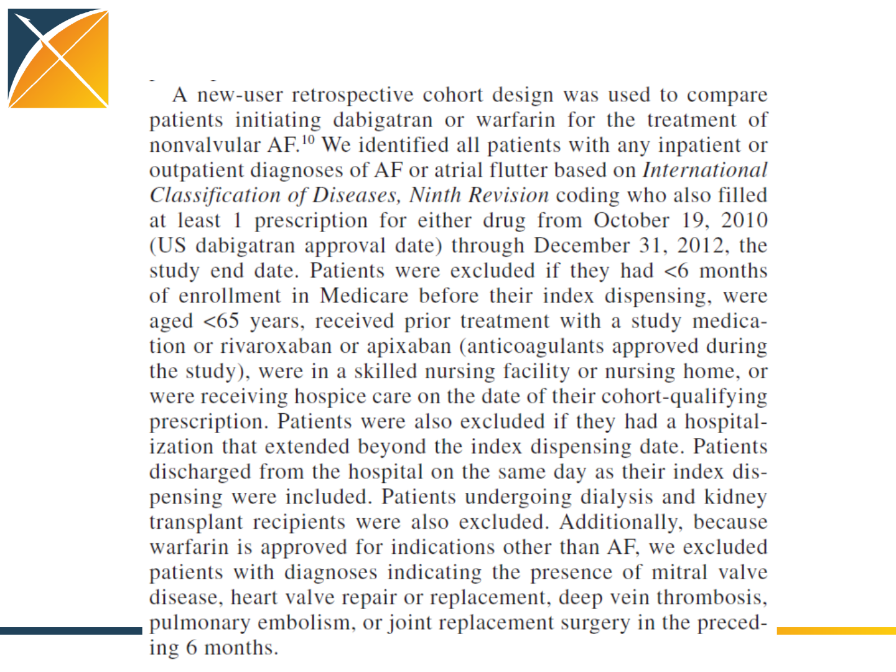
Graham et al. description of the cohort(s)
Graham et al. replication:
Designing the target cohort in ATLAS

Graham et al. replication:
Designing the target cohort in ATLAS
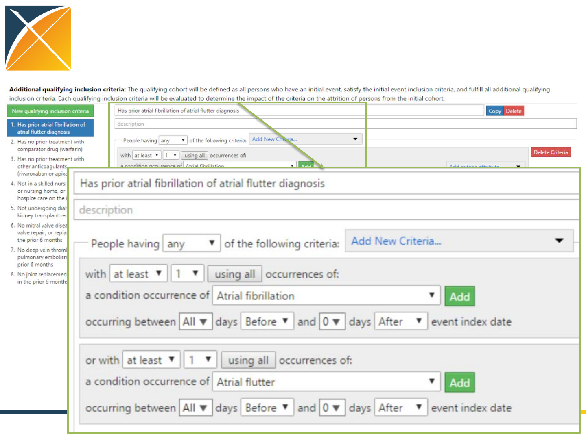
Graham et al. replication:
Designing the target cohort in ATLAS
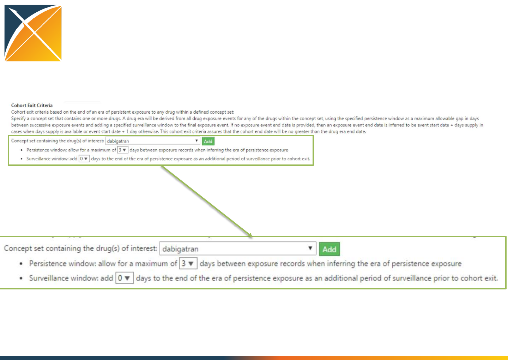
Graham et al. replication:
Designing the target cohort in ATLAS
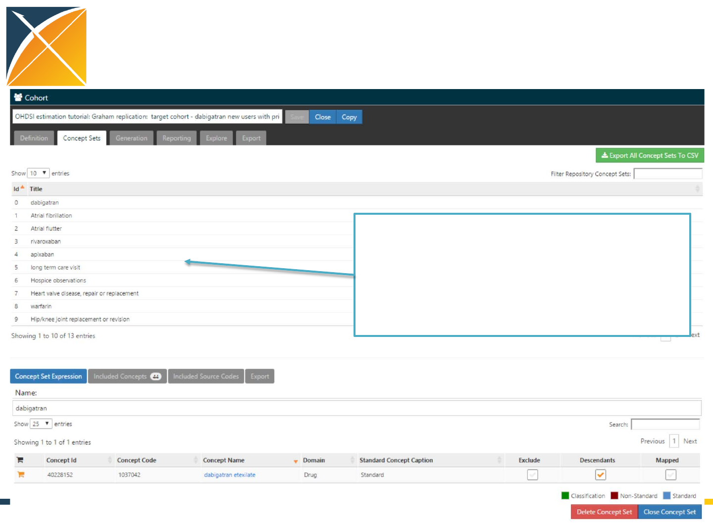
Graham et al. replication:
Designing the target cohort in ATLAS
Every entity referenced the
cohort definition needs to a
complete definition of concepts
and associated source codes
Graham et al. replication:
Designing the comparator cohort in ATLAS
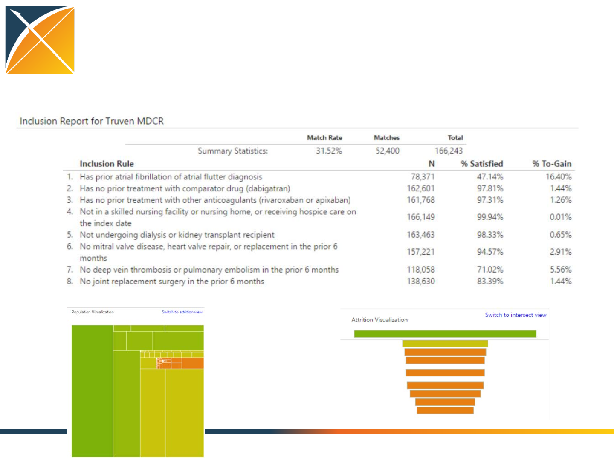
Graham et al. replication:
Evaluating the impact of inclusion criteria on
the comparator cohort in ATLAS
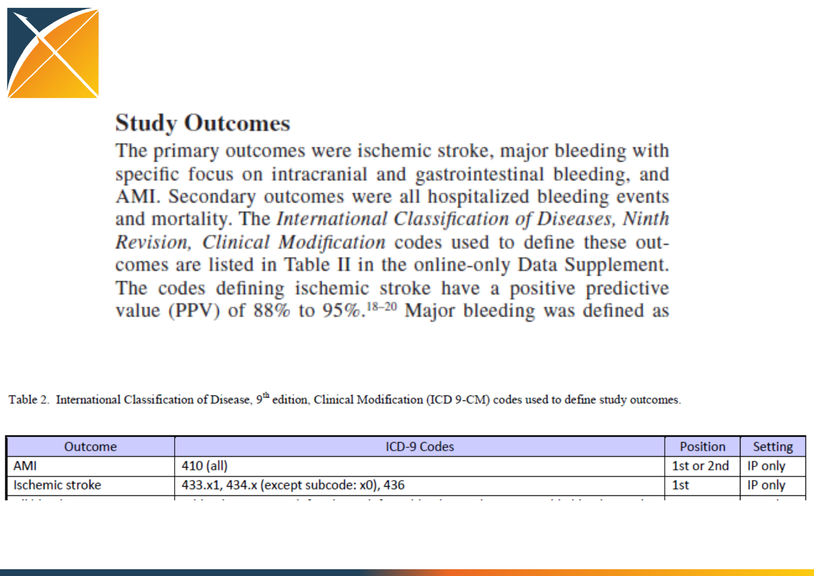
Graham et al. description of the
outcomes
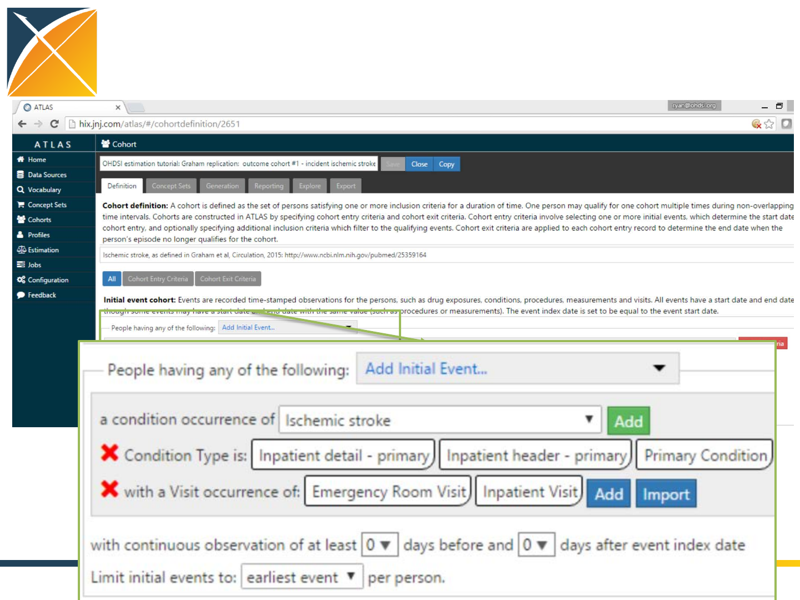
Graham et al. replication:
Designing the outcome cohort in ATLAS
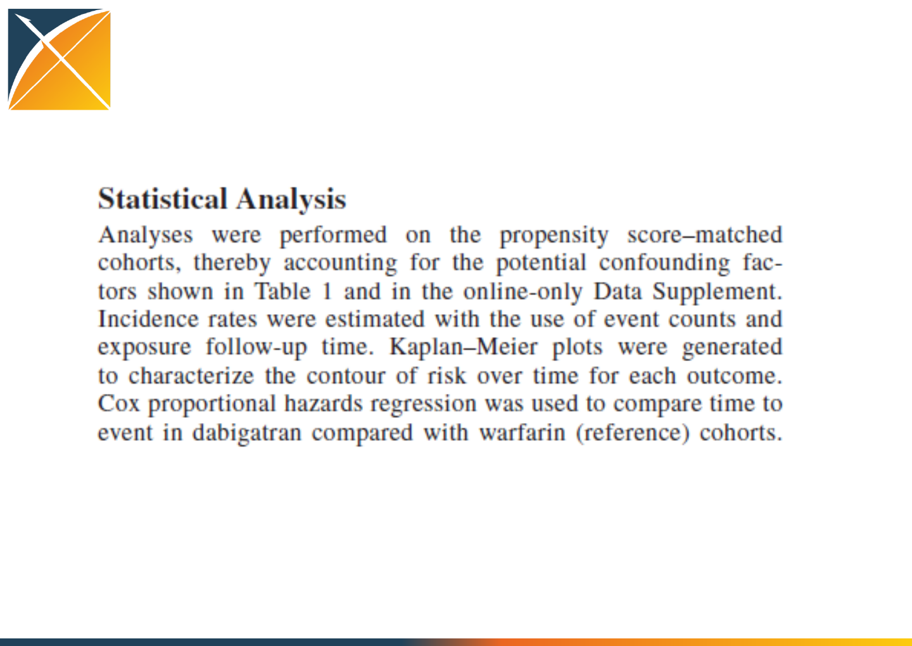
Graham et al. description of the
outcome model
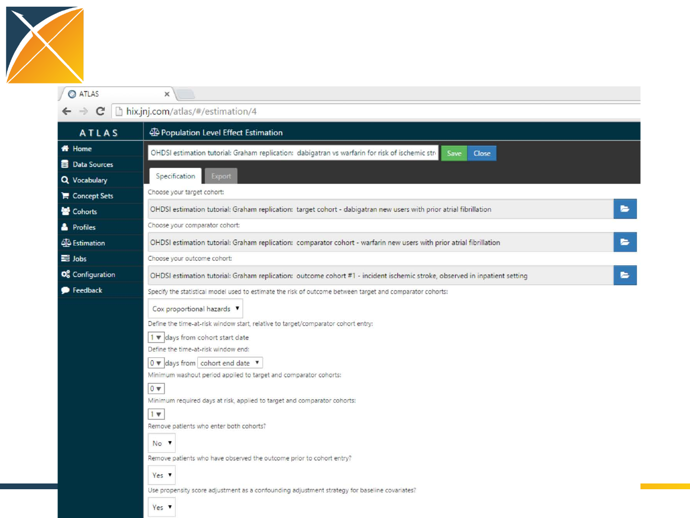
Graham et al. replication:
Designing the outcome model in ATLAS
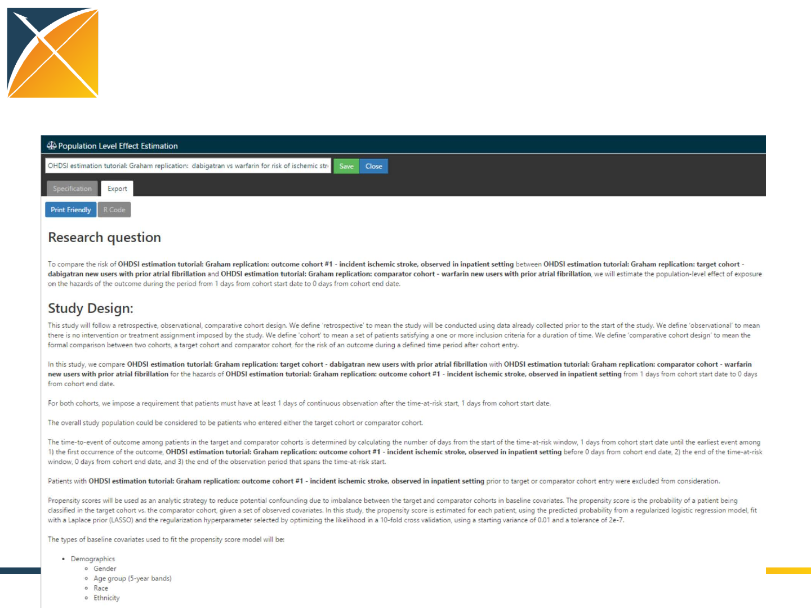
Graham et al. replication:
Designing a protocol in ATLAS